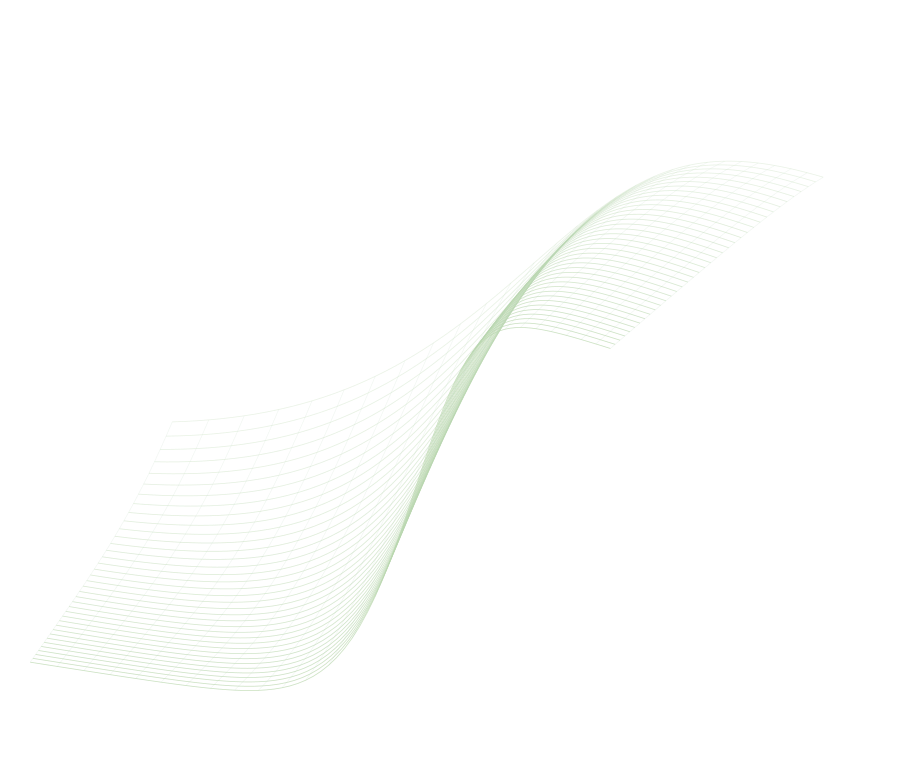

GENETICS 161(4) · 1751–1762
已发表Functional Mapping of Quantitative Trait Loci Underlying the Character Process: A Theoretical Framework
把性状的连续变化纳入遗传定位的理论框架。 PubMed 摘要 ↗

Life is a process.
Understanding it is a journey.
一个时刻的测量，是生命的切片。连续的轨迹，让发育的节奏浮现；相互作用的网络，则让我们看见，部分如何共同构成整体。这座网站以可探索的数学图景，走近邬荣领教授及其合作者的研究世界。
本站主题与导语为原创编辑性文案，并非教授本人引语。
功能作图 Functional Mapping
从「此刻有多高」，走向「如何生长」。
三条曲线共享上限 K = 100 与拐点 t₀ = 5。在拐点都经过 50，生长速度却各不相同。试着移开观测线。
在 t = 5，三条曲线重合于 50；单凭这个点无法区分生长速率。
从各自的轨迹，到共同的系统。
向下滚动，让关系逐渐浮现。
邬荣领教授与合作者将进化博弈、尺度规律和动态系统等方法结合，探索有向、有符号、加权的生物相互作用网络。准动态模型中的排序轴不必等同于真实时间；模型推断的联系也需要进一步的生物学检验。[3]
以广义 Lotka–Volterra 形式 dxᵢ/dt = xᵢ(aᵢ + Σⱼ bᵢⱼxⱼ) 为例，在其他量固定且状态非负时，bᵢⱼ 的正负可表示 j 对 i 增长项的促进或抑制。本图仅展示固定关系，不求解方程，不构成因果证据。滚动变形是视觉叙事，不是从曲线推断网络的算法。
概念演示 / Illustrative model — not empirical data
五个入口，一条相互连接的研究路径。
点击展开，阅读问题、方法与出处。
遗传变异影响的，究竟是最终的大小，还是发育过程中的速度、时机与形状？
用曲线参数描述连续性状，再将其纳入遗传定位模型。Ma、Casella 与 Wu 的 2002 年研究建立了功能作图的理论框架，2006 年 Wu 与 Lin 的文章进一步讨论动态复杂性状。
Genetics · 2002 Nature Reviews Genetics · 2006关联 → 数量遗传学 / 发育过程 / 动态网络
细胞之间如何合作、竞争，又如何共同塑造肿瘤微环境？
2023 年 Sang、Feng、Dong、Gragnoli、Griffin 与 Wu 的综述介绍准动态博弈图理论，将生态、进化博弈与广义 Lotka–Volterra 形式结合，研究细胞间作用的方向、符号与强度。
Physics Reports · 2023关联 → 功能作图 / 进化博弈 / 系统医学
如果重要的信息存在于连接结构中，统计学应如何描述这些非欧几里得数据？
Wu 与 Yau 的 2026 年预印本讨论图统计，将图论、拓扑数据分析和准动态非线性建模等视角联系起来，探索以网络关系组织数据的统计分析。
arXiv · 2026 · 预印本关联 → 网络结构 / 非欧几里得数据 / 人工智能
群体层面的遗传信息，如何帮助刻画不同个体的基因相互作用？
2026 年 IdopNetworks 合作论文讨论将功能作图与进化博弈结合的准动态框架，探索个体化的遗传网络及精准医学应用。这是建模研究与转化方向，不是已验证的治疗建议。
Drug Discovery Today · 2026关联 → 个体化基因组学 / 动态网络 / 药物研究
算法给出预测之后，我们怎样理解它的推断依据、假设与适用边界？
在 2024 年清华学术报告中，邬荣领教授讨论统计学与人工智能的理论联系，以及统计推理对可解释性的作用。它为理解 AI 提供研究视角，不意味着已有统一理论解决所有问题。
清华大学 · 学术报告 · 2024关联 → 统计推断 / 图统计 / 可解释性
五篇代表性合作成果，依时间排列。保留每位作者的署名，让研究回到它的出处。
把性状的连续变化纳入遗传定位的理论框架。 PubMed 摘要 ↗
动态复杂性状的遗传结构与功能作图。期刊类型：Opinion。
以准动态博弈图理论探索细胞间的有向、有符号相互作用。
从群体信息探索个体化的遗传相互作用网络。
图统计的理论联系与研究愿景。此处列为预印本。
显示 5 篇精选成果
在 BIMSA 查看更多论文1980–1984 年本科阶段。
1984–1987 年，林业遗传学。
1990–1995 年，数量遗传学。
University of Washington, Seattle
开始担任助理教授。
开始担任统计学与公共卫生科学教授。
加入 BIMSA，担任研究员。